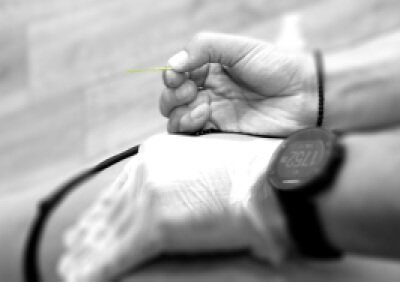

Καμία τεχνική δεν κάνει τα πάντα. Τις συνδυάζουμε ανάλογα με το τι βρέθηκε στην αξιολόγηση. Πατήστε σε μία για να δείτε τι είναι και πότε χρησιμοποιείται.
Ενδεικτικός κατάλογος τεχνικών.
Ο στόχος είναι να ξαναγίνει η κίνηση φυσιολογική και να μην επιστρέψει ο πόνος. Γι' αυτό καμία συνεδρία δεν τελειώνει χωρίς άσκηση — ούτε ξεκινάει χωρίς αξιολόγηση.
